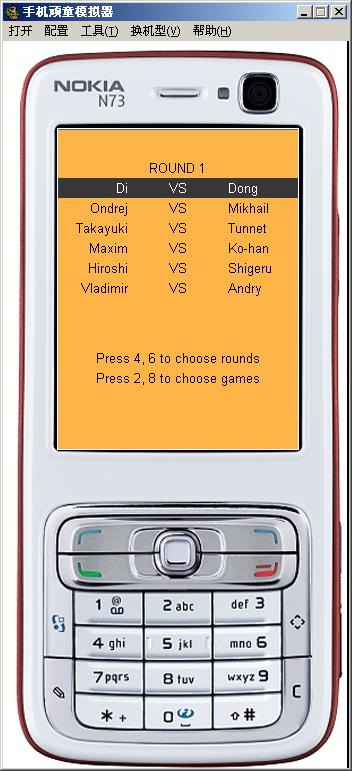

自制手机版本 第11届世界连珠 AT 全谱
首页
五子棋软件
#1 自制手机版本 第11届世界连珠 AT 全谱 作者：王小 发表时间：2009-11-5 10:54:52
自制手机版本 第11届世界连珠 AT 全谱
居家旅行必备
由于每个手机的按键不一
建议用 2，4，6，8， 5来操作棋谱，谢谢。
（主要是懒得用gamecanvas）
../files/200911511111.zip
［ 有志青年 于 2009-11-5 11:58:32 时奖励此帖[金币加 20 威望加1］
［ 兔子哥哥 于 2009-11-5 22:24:41 时花20金币送鲜花一朵］
［ 逆刃 于 2009-11-5 22:40:45 时花20金币送鲜花一朵］
［ 圊籽 于 2011-12-4 12:19:25 时花20金币送鲜花一朵］
#2 Re:自制手机版本 第11届世界连珠 AT 全谱 作者：有志青年 发表时间：2009-11-5 11:58:21
期待详细的安装操作方法
#3 Re:自制手机版本 第11届世界连珠 AT 全谱 作者：小丸.net 发表时间：2009-11-5 12:24:48
没有手机，不过我用模拟器玩过了，不错~~~
发张截图吧：

PS:提个建议，此软件还是能适应各种分辨率的手机。好像只支持大屏的。
不过我建议楼主在此软件的基础上做一个手机上的打谱软件。可以直接保存sgf格式的谱。，。。这样就可以和电脑完美无缺的整合起来，实现真正的随时随地都打谱
#4 Re:自制手机版本 第11届世界连珠 AT 全谱 作者：王小 发表时间：2009-11-5 12:58:48
就是普通的J2ME包，直接安装就可以了。
像nokia，sony&i的 直接蓝牙传输上去就可以安装了。
J2ME的存档不能copy出来。
只有给IPHONE，linux的手机才能保存sgf格式，
这个以后等好久有空搞一下。
#5 Re:自制手机版本 第11届世界连珠 AT 全谱 作者：兔子哥哥 发表时间：2009-11-5 22:24:25
很好，谢谢楼主，太感谢了
#6 Re:自制手机版本 第11届世界连珠 AT 全谱 作者：隐藏菜系 发表时间：2009-11-8 10:16:11
下来看看 ，谢谢楼主
#7 Re:自制手机版本 第11届世界连珠 AT 全谱 作者：逍遥生 发表时间：2010-1-11 6:08:53
我以前还一直用围棋打谱器在打
#8 Re:Re:自制手机版本 第11届世界连珠 AT 全谱 作者：随风兮飘荡 发表时间：2010-7-3 16:38:13
期待手机打谱软件或集成更多棋谱的小程序。
#9 Re:自制手机版本 第11届世界连珠 AT 全谱 作者：瑞星棋童 发表时间：2010-10-5 14:14:41
非常感谢楼主的分享，做得非常好。能不能贪心的问一下，还有没有其他的一些棋谱呢，另外，这个是怎么做的，通过JAVA编写的吗，我觉得在手机上打谱方便多了，随时都能看一下。再次谢谢!
#10 Re:自制手机版本 第11届世界连珠 AT 全谱 作者：王小 发表时间：2010-10-8 13:03:30
自己写代码做的。
最近有点空了，计划，做一个 J2ME的简单的打谱软件和浏览软件。
等以后再有空，会做iphone和ophone的，不知道有人想要sis格式的么？
#11 Re:自制手机版本 第11届世界连珠 AT 全谱 作者：逆刃 发表时间：2010-10-8 17:49:42
LZ能不能做一个支持android系统的啊？现在这个系统很火啊。
#12 Re:自制手机版本 第11届世界连珠 AT 全谱 作者：极地剑客 发表时间：2010-10-8 21:07:28
比较好奇能不能做个支持垃圾手机三星G508E手机的啊~
#13 Re:自制手机版本 第11届世界连珠 AT 全谱 作者：王小 发表时间：2010-10-8 22:26:57
三星G508E 貌似不垃圾,楼上直接用jar 蓝牙传上去不行么？
android 在中国叫ophone的哇?
#14 Re:自制手机版本 第11届世界连珠 AT 全谱 作者：极地剑客 发表时间：2010-10-11 20:31:51
多谢楼上回复~我也好奇怪列~不是还下了个五子风的手机软件吗~都安不上去?问三星论坛问了~貌似安装超级麻烦的所~~~~~~~两种格式压缩包都丢上去了~直接安装不了~
#15 Re:自制手机版本 第11届世界连珠 AT 全谱 作者：瑞星棋童 发表时间：2010-10-14 0:01:20
哪种格式的不太懂，但发出来这个就做得挺好的，还有多个黑五点的显示，很好，再次谢谢，期待更多的棋谱和打谱软件。
#16 Re:Re:自制手机版本 第11届世界连珠 AT 全谱 作者：夜冷彩殇 发表时间：2011-2-7 20:36:24
sis肯定有需要的
不过还是jar好点吧
毕竟智能非智能都能看的
嗯嗯 jar吧jar
#17 Re:自制手机版本 第11届世界连珠 AT 全谱 作者：一盏幽冷 发表时间：2011-11-27 16:54:17
期待楼主的新作啊，再多做些棋谱吧